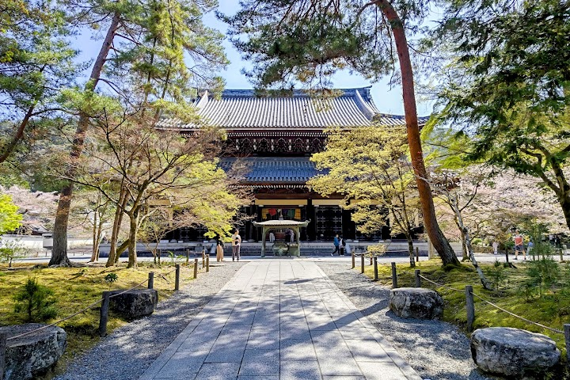
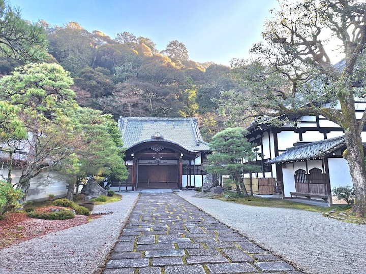
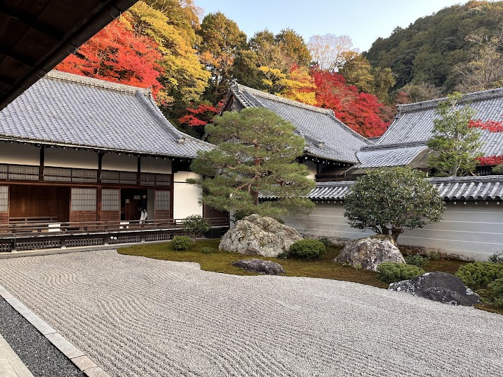
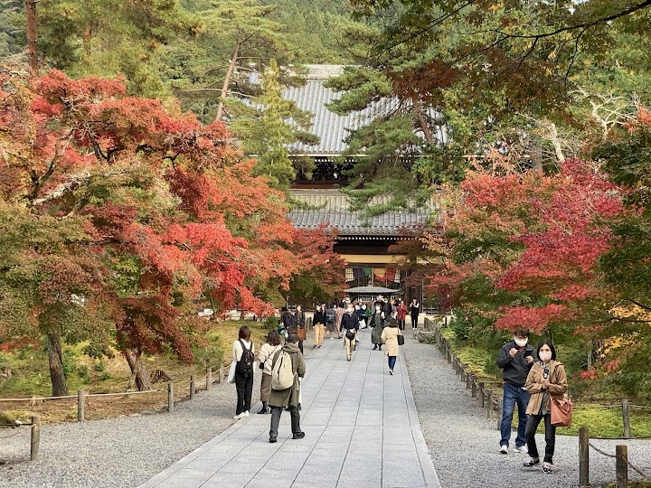
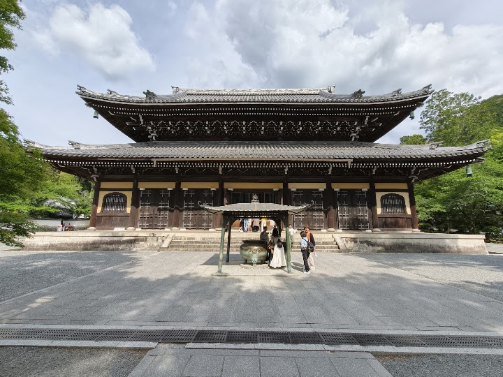

Nanzen-ji
Nanzen-ji is a stately Zen temple complex, one of Kyoto's most important, founded in 1291 by Emperor Kameyama. It has a giant gate, a Zen garden, forested grounds and walking paths, and a brick aqueduct that fits among the buildings.
Open in Google Maps (street view, more photos and reviews there)






Visitor tips on finding it and getting there
Really nice, lowkey temple grounds outside Kyoto. I was only here briefly, but there were hardly any crowds and it was a very peaceful. You can actually enter the main temple (you have to take your shoes off) and walk up some stairs to the balcony which is pretty cool.